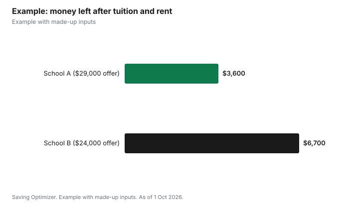

Education · Canada
Graduate School Cost in Canada and How Funding Packages Work

Graduate school in Canada costs tuition plus living expenses, but many research master's and most PhD students receive a funding package that covers much of it. Statistics Canada's preliminary average graduate tuition for Canadian students is $8,106 for 2026/2027, and $10,048 in Ontario. At the University of Toronto, PhD students in the funded cohort get base funding of at least $40,000 a year, including tuition, or about $31,000 after tuition. Federal scholarships add more: the Canada Graduate Research Scholarship for master's students (CGRS M) pays $27,000 for 12 months, and its applications are due 1 December. Compare offers on what is left after tuition and fees, and read what the package expects in return, such as teaching hours.
Key takeaways
- Average graduate tuition for Canadians, 2026/2027: $8,106 in Canada, $10,048 in Ontario.
- CGRS M: $27,000 for 12 months; deadline 1 December before 8 p.m. ET.
- CGRS D: $40,000 per year.
- U of T PhD base funding: at least $40,000 including tuition, about $31,000 net.
- A funding package is often a mix of fellowship, research assistantship and teaching income.
- Example with made-up inputs: comparing two master's offers.
Graduate tuition by province
| Province | 2025/2026 | 2026/2027 |
|---|---|---|
| Canada | $7,863 | $8,106 |
| Ontario | $9,699 | $10,048 |
| British Columbia | $11,185 | $11,388 |
| Alberta | $6,837 | $6,962 |
| Quebec | $4,270 | $4,395 |
Averages hide wide ranges. Professional master's programs, such as an MBA, can be priced higher than research programs and may not come with a funding package, so ask each program. Research-stream master's and PhD programs are more likely to be funded. Compulsory fees are extra, and some schools charge tuition for all three terms, including summer.
Federal scholarships
| Award | Value | Notes |
|---|---|---|
| CGRS M (master's) | $27,000 for 12 months | Deadline 1 December before 8 p.m. ET; apply through the Research Portal |
| CGRS D (doctoral) | $40,000 per year | Administered by CIHR, NSERC and SSHRC |
| Indigenous Scholars Supplement | $5,000 | Pilot for eligible First Nations, Inuit and Métis students |
The CGRS M is part of the Canada Research Training Awards Suite run by the three federal granting agencies. NSERC notes that applicants must also respect each school's internal admission deadlines, and that late applications are not accepted. If the deadline falls on a weekend or federal holiday, it moves to the next business day. Check the eligibility rules for months of prior study on the agency page before applying.
What a funding package contains
A package is usually a guaranteed minimum made of several pieces: a university or department fellowship, a research assistantship paid by your supervisor's grant, and, for many PhD students, teaching assistant income. At U of T's Department of Electrical and Computer Engineering, the 2026-27 minimum for a domestic MASc student is $29,122, against tuition and fees of $8,622, which leaves $20,500 for living costs. Students with external awards get a larger total, because the department adds less than the award replaces.
| Scenario | Total package | External award | After $8,622 tuition and fees |
|---|---|---|---|
| Standard, no external award | $29,122 | $0 | $20,500 |
| With an Ontario Graduate Scholarship | $37,122 | $15,000 | $28,500 |
| With an NSERC CGS-M | $40,722 | $27,000 | $32,100 |
International students
International graduate students pay much more. Statistics Canada's preliminary average graduate tuition for international students is $24,693 in Canada and $28,900 in Ontario for 2026/2027. Funding packages may be larger to offset this: U of T ECE lists tuition and fees of $36,700 for an international MASc student in 2026-27 and a standard minimum package of $57,200, which leaves the same $20,500 as for a domestic student. Policies differ widely, so international applicants should ask each program for the net amount after tuition and fees.
Provincial and university awards
Beyond the federal awards, provinces and universities run their own scholarships. Ontario Graduate Scholarships are one example; U of T ECE counts an OGS as a $15,000 external award, raising a domestic MASc package to $37,122. Many departments also have entrance awards, and some require a separate application. Ask your prospective department for a list, along with any internal deadlines. Plan backwards from them: reference letters, transcripts and a research statement each take time, so ask referees at least a few weeks ahead and order transcripts early. If you are applying to start in September 2027, the fall of 2026 is when most of this work happens, including the 1 December CGRS M deadline.
Questions to ask about any offer
- Is the amount gross, including tuition, or net after tuition?
- How many years is it guaranteed, and what are the conditions?
- How much comes from teaching, and how many hours does that require?
- What happens to the package if I win an external scholarship?
- Is summer included?
- Are there compulsory fees not covered?
Taxes and other costs
The pieces of a package, such as a fellowship, a research assistantship and teaching pay, can be reported differently on your tax return. Ask your school's financial aid office how each piece is paid, and read the Canada Revenue Agency's guide for students before filing. Budget for health plan fees, conference travel and, if you move, rent near campus, which can take most of a stipend in large cities.
Example with made-up inputs
These numbers are an example with made-up inputs. Taylor has two master's offers. School A offers a $29,000 package including tuition, with tuition and fees of $8,600, so $20,400 is left, and rent near campus of a made-up $1,400 a month, $16,800 a year, leaving $3,600. School B offers $24,000 with tuition of $6,500, leaving $17,500, in a city where rent is a made-up $900 a month, $10,800 a year, leaving $6,700. The smaller headline offer leaves more money. If Taylor then wins a $27,000 CGRS M, the result depends on each school's policy for external awards; ask both.
| School A | School B | |
|---|---|---|
| Package | $29,000 | $24,000 |
| Tuition and fees | $8,600 | $6,500 |
| Rent, 12 months | $16,800 | $10,800 |
| Left for everything else | $3,600 | $6,700 |

Steps
- Apply for external scholarships early; the CGRS M deadline is 1 December.
- Ask each program for its minimum funding package in writing.
- Subtract tuition, compulsory fees and local rent.
- Ask how external awards change the package.
- Check teaching hours and summer funding.
- Choose on net funding, supervisor fit and outcomes.
Common mistakes
- Comparing gross package numbers that include tuition with ones that do not.
- Missing scholarship deadlines in the fall before you start.
- Ignoring local rent.
- Assuming professional master's programs are funded like research programs.
- Not asking what happens to the package if you win an award.
- Not budgeting for rent deposits and moving costs that come due before the first funding payment arrives.
Related: scholarship deadlines and college versus university costs.
Sources
- Statistics Canada, Table 37-10-0045-01 Canadian and international tuition fees by level of study (released 16 Sep 2026), as of 1 Oct 2026. 2026/2027 preliminary.
- NSERC, Canada Graduate Research Scholarship - Master's program and Doctoral program, nserc-crsng.gc.ca, as of 1 Oct 2026.
- University of Toronto School of Graduate Studies, Graduate Funding, sgs.utoronto.ca, as of 1 Oct 2026.
- University of Toronto Electrical and Computer Engineering, Funding Packages for the 2026-2027 Academic Year, ece.utoronto.ca, as of 1 Oct 2026.
- Offers, tuition and rent in the example are made-up inputs.
Frequently asked questions
How much is graduate tuition in Canada?
Statistics Canada's preliminary average for Canadian graduate students is $8,106 for 2026/2027, and $10,048 in Ontario.
How much is the CGRS M scholarship?
$27,000 for 12 months. Applications are due 1 December before 8 p.m. ET.
How much is the CGRS D?
$40,000 per year.
What is the minimum PhD funding at the University of Toronto?
At least $40,000 a year including tuition for PhD students in the funded cohort, or about $31,000 net of tuition, since Fall 2025.
Do external scholarships increase my funding package?
Often, but it depends on the program. At U of T ECE, a domestic MASc package rises from $29,122 to $40,722 with an NSERC CGS-M.
Are professional master's programs funded?
Usually less often than research programs. Ask each program whether it offers a funding package.
Researched and drafted with AI assistance and fact-checked against official Canadian sources. How we create content.